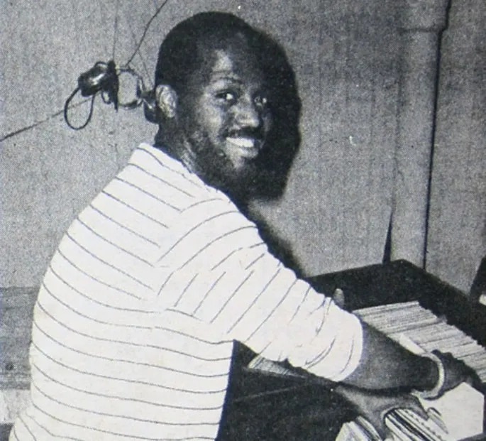
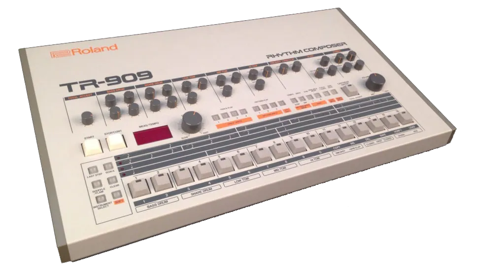

El Chicago recibe su nombre de una discoteca llamada Warehouse. Según la leyenda, fue en ese legendario club nocturno Warehouse donde Frankie Knuckles pinchaba discos de Disco, Soul , Funk , R&B , Italo Disco / Hi NRG , Rock, Rap, Pop.

Al igual que la residencia de Larry Levan en Paradise Garage en Nueva York, la gente empezó a llamar a los sets eclécticos de Knuckles "música Warehouse" o simplemente "música house", pero faltaba un ingrediente crucial que convertiría su música Warehouse en música House con H mayúscula.
Irónicamente, Knuckles dejó el Warehouse en 1983 antes de que la música house se popularizara. Fundó un nuevo club, The Powerplant, y posteriormente el Warehouse pasó a llamarse Music Box y continuó con otro famoso director musical, Ron Hardy . Pero el apelativo de "música house" siguió a Knuckles y ambos locales se convirtieron en referentes del auge de la música electrónica que se baila.

Siguiendo el consejo de Derrick May , Frankie Knuckles pronto recogió el arma secreta que definiría sus sets y cambiaría la música para siempre: una caja de ritmos Roland TR-909.
Knuckles usaba una de estas en sus sets, imponiendo un ritmo denso de 4 por 4 a todo lo que tocaba, creando un bombo adictivo y potente que enloquecía a los clientes de las discotecas.
Otra cosa importante que el 909 le dio al mundo fue su delicioso aplauso. Al tocarlo en sucesión, suena como si alguien dijera "Jack", lo que le dio al house su primer meme sonoro. Cuando escuchas el sonido del house jak-jak-jak-jackin', sabes que es el sonido original de Chicago.
Al dejar el 909 funcionando y reproduciendo ritmos en bucle durante toda la noche, y armado con cintas de carrete a carrete que él mismo editó en remezclas y supercortes, Knuckles había creado una atmósfera de permanencia repetitiva, de canciones que se fusionaban, de un nuevo estilo de música que rompía con todas las nociones de composición de canciones pop.
Ya no se esperaba el estribillo, el puente, la voz ni nada que siguiera la estructura estándar de una canción. Con un 909 y discos de disco en bucle, ¿qué más se necesitaba? No había estribillo, puente, himno, drop ni breakdown. No hay gancho porque cada parte es un gancho. Este es el legado que nos deja la música house.
(Se puede argumentar, un poco más débil, que la repetición de House toma prestado de la estrofa de Blues, donde la segunda línea repite la primera, la tercera se desvía y la cuarta es la rima final, es decir: AABA. House va un paso más allá y se convierte en AAAB, donde las tres primeras líneas se repiten y la cuarta línea es la desviación/recompensa.
Había una gran demanda de estas versiones en vivo para ser grabadas, así que cuando los productores de Chicago House entraron al estudio a grabar las pistas, cada uno añadió su propio estilo. Farley "Jackmaster" Funk y Jessie Saunders lo hicieron épico , Larry Heard lo hizo profundo , Steve "Silk" Hurly lo hizo potente , Marshall Jefferson añadió pianos , Ron Hardy añadió divas , Fast Eddie añadió rap y Phuture añadió acid .
Chicago House nos dio la diva atrevida y exagerada, la línea de bajo funky, el relleno de piano, el monólogo gay sudoroso, la línea ácida, el coro gospel y, por supuesto, ese omnipresente bombo del 909.
1986 fue el año clave en que el house de Chicago irrumpió en las listas de éxitos. En menos de un año, la música se expandió a otros países y todos se apresuraban a crear su propia música house. Irónicamente, a pesar de su alcance y éxito global, seguía sin ser muy reconocido en su ciudad natal (un patrón recurrente entre los músicos electrónicos, especialmente en Norteamérica: popular en todas partes menos en casa).
A mediados de los 90, el house era tan predominante que el sonido original del house de Chicago fue abandonado por sus descendientes más amigables, menos gays y menos negros.